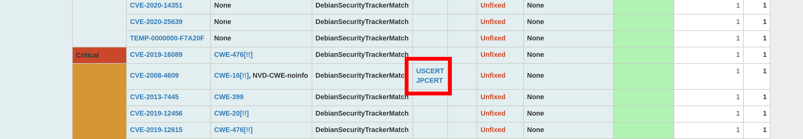

VulsRepo online demo v.0.2.3 is here.
v0.2.3
- #72
USCERTis now shown in theCERTof the pivot table.  - #76
Show
[WARN]if there is a warning on a scan. - #73
Add
Repository. - #74
Add
FixedInandFixState. (Vuls v.0.9.2 or later required)
- #69
Add
Metasploit Modulesview to the details panel. (Vuls v.0.11.0 or later required) - #81
Add
USCERT AlertandJPCERT Alertindications to the details panel. - #91
Move
Exploit Codesdisplay fromReferrencestoExploitsin the details panel. - #92
Add
CWE name,2019 CWE Top 25 Most Dangerous Software Errors,OWASP Top 10 - 2017andSANS Top 25 Software Errorsdisplays to theCweIdon the details panel. - Add the
[!!]mark can now be turned on or off forCweIdon the pivot table. Also, while it used to be attached to theCWE Top 25, it has been added to theOWASP Top 10andSANS Top 25. - #80
Add
rel="noopener noreferrer"when opening an external site. - #89
Confirmation dialog when you click the
Deletebutton for a setting. - #97 Change CVSS Score format.
You can see a sample of the following vulnerability scan results.
- Amazon Linux 2
- Ubuntu 18.04
- Raspbian 9.13
- Raspberry Pi OS 10
- Alpine Linux on Docker container
See also https://github.com/ishiDACo/vulsrepo/releases/tag/v0.2.3